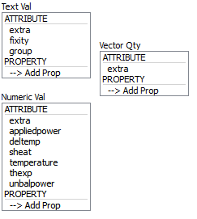

球体热学
说明
球体渲染为{二维中的圆盘；三维中的球体}、箭头或范围，并按属性或特性着色。
此绘图项的控制方式与 球体（Ball） 绘图项完全相同；它们之间的区别在于 按…着色 属性上可用的选项集合，这些选项列举如下。
属性
形状
参见 球体（ball） 绘图项的说明。
按…着色

指定要渲染该项目的哪一方面，从三个互斥分组中选择（同一时间每个分组中只有一项选择处于活动状态）：文本值（textual values）、数值（numeric values） 和 矢量量（vector quantities）。若选择了 矢量量，则会新增一个字段，用于指定渲染矢量的是某个分量（\(x\)、\(y\) 或 \(z\)）还是其大小（mag）。
在选择器底部选择 -->Add Prop 将弹出一个对话框，用户可在其中指定要添加到列表中的新特性（并使其成为活动的 按…着色 选择）。
选择器上的 ATTRIBUTE 和 PROPERTY 字样不起任何作用；提供它们只是为了在视觉上区分这两个分组。
| extra | 按 extra 变量着色。额外提供一个字段，用于按索引标识该变量。 |
| 固定 | 按固定条件着色。 |
| 分组 | 按分组着色。额外提供一个字段，用于指定槽位索引。默认设置为 任意（它占据微调框上的索引位置 0）。 |
| extra | 按 extra 变量着色。额外提供一个字段，用于按索引标识该变量。 |
| appliedpower | 按施加的功率着色。 |
| deltemp | 按温度增量着色。 |
| sheat | 按比热容着色。 |
| temperature | 按温度着色。 |
| thexp | 按热膨胀系数着色。 |
| unbalpower | 按不平衡功率着色。 |
| extra | 按 extra 变量着色。额外提供一个字段，用于按索引标识该变量。 |
颜色选项
参见 球体（ball） 绘图项的说明。
映射
参见 球体（ball） 绘图项的说明。
透明度
参见 球体（ball） 绘图项的说明。
图例
参见 球体（ball） 绘图项的说明。
| 这些内容对您有帮助吗？… 版权与免责声明 | FLAC3D © 2019, Itasca | 原文更新于 2020 年 10 月 8 日 |